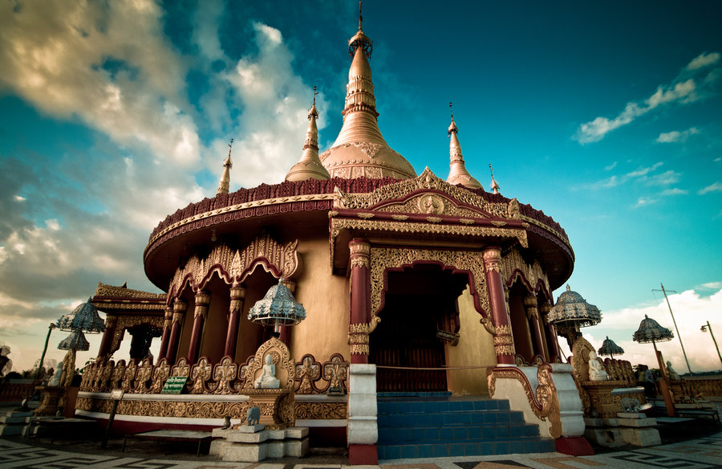
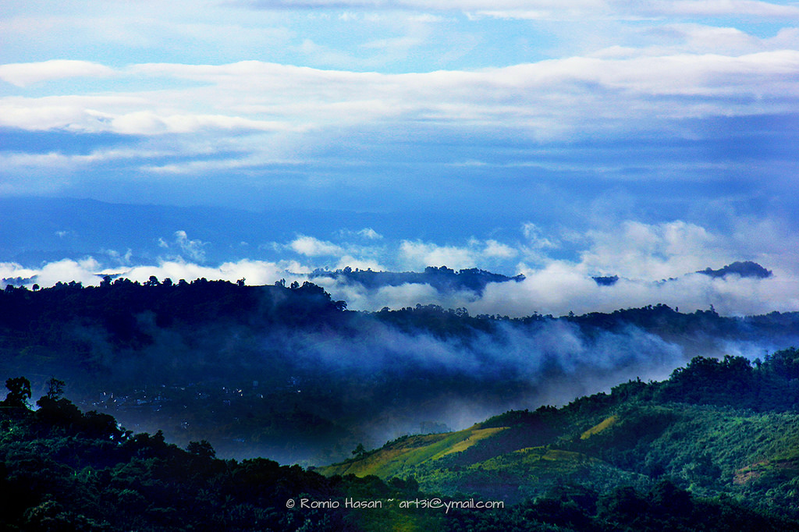
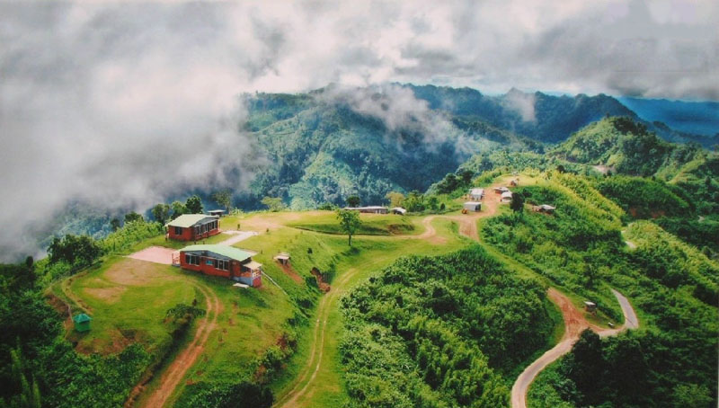
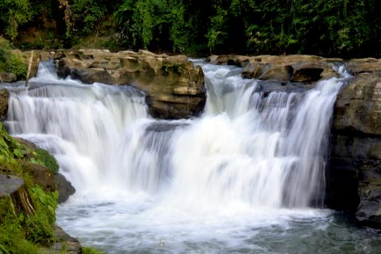
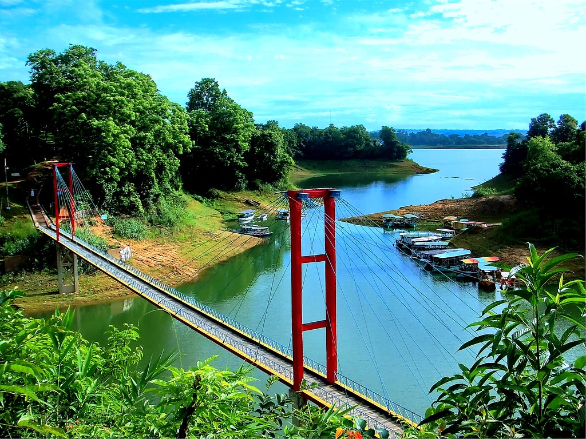
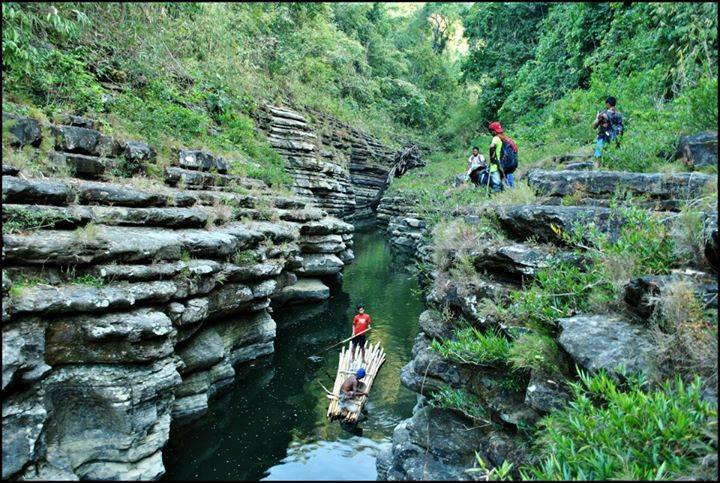

Jatra Sohayok
For your comfort
Beautiful Bangladesh

The Buddha Dhatu Jad Temple,Bandarban

Nilachal,Bandarban

Nilgiri Mountains,Bandarban

Shoilo Propat,Bandarban
Keokaradong,Bandarban

Kaptai,Rangamati

Amiakhum,Bandarban
Who Are we?
Traveling to hill tracks of Bangladesh is very amazing but finding a guide quickly is not an easier option.Jatra Sohayok is a search app where you will find tourist guides according to your choice.This is also a platform for the indigenous people to present their traditions & culture and a chance to explore the beauty of Bangladesh.It's a tour guide finding system where it will be an easier way to find any guide according to the need of the travelleres for their convenience.
Where To Find Us?
Connect With Us